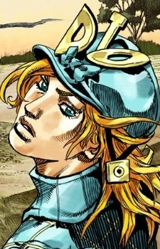

Дата рождения: 1870
Возраст: 20
Раса: Человек
Пол: Мужской
Национальность: Англичанин

Диего Брандо
Информация
Описание
Диего Брандо (ディエゴ・ブランドー Diego Burandō?) - антагонист 7 части манги "Невероятные приключения ДжоДжо", Гонка «Стальной Шар».
Диего - один из лучших жокеев Британии, которого провозгласили одним из лучших претендентом гонки "Стальной Шар". Со временем он перекладывает свой взор на Святой Труп. Весьма мощный соперник для Джонни и Джайро. Хотя он работает с разными сторонами по ходу истории, Диего верен только себе.
Во время гонки с помощью левого глаза Трупа получает контроль над стендом Scary Monsters, ранее принадлежавшим Доктору Фердинанду.
Диего - один из лучших жокеев Британии, которого провозгласили одним из лучших претендентом гонки "Стальной Шар". Со временем он перекладывает свой взор на Святой Труп. Весьма мощный соперник для Джонни и Джайро. Хотя он работает с разными сторонами по ходу истории, Диего верен только себе.
Во время гонки с помощью левого глаза Трупа получает контроль над стендом Scary Monsters, ранее принадлежавшим Доктору Фердинанду.
Манга